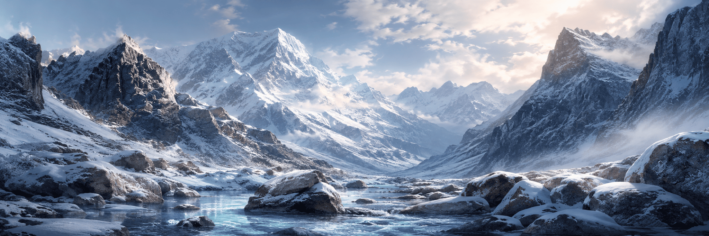
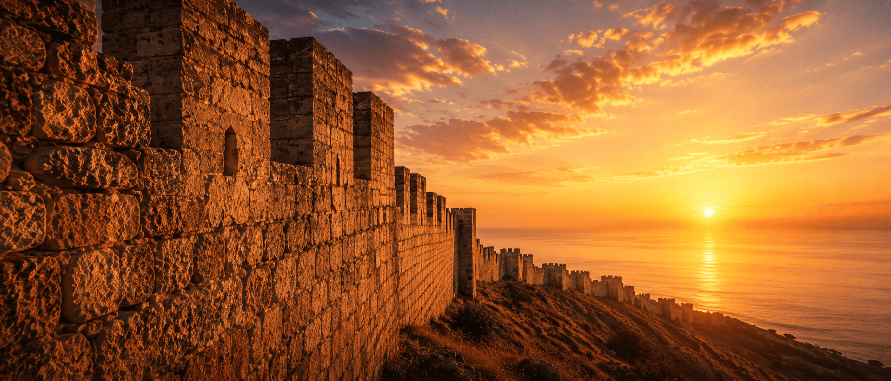
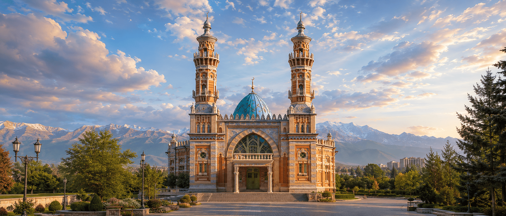
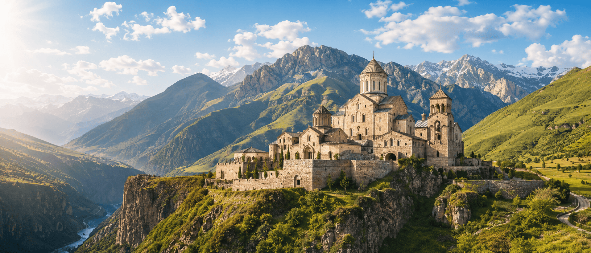
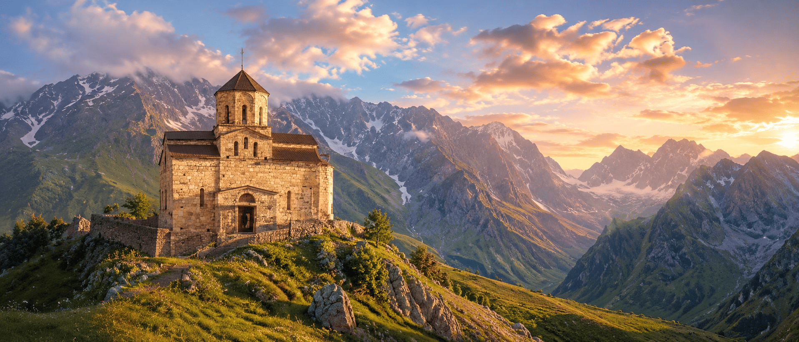
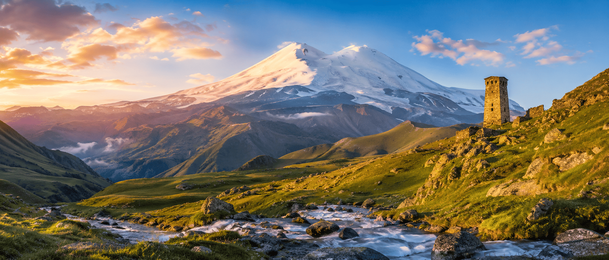
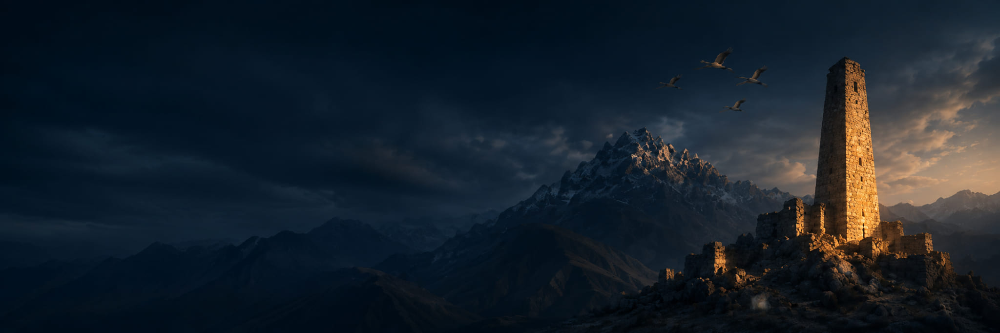
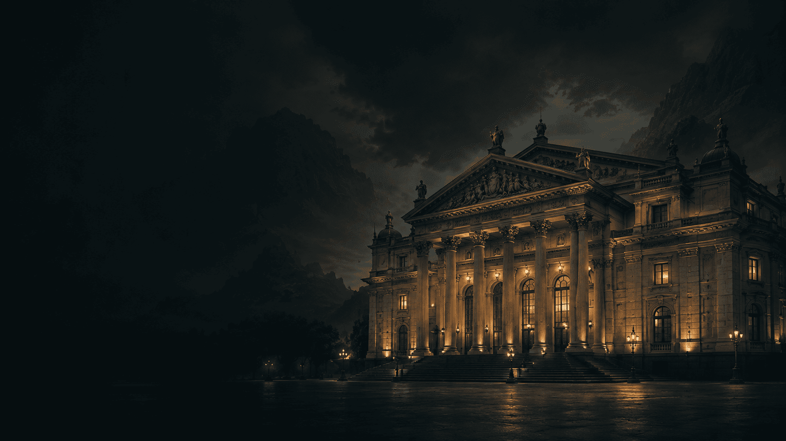
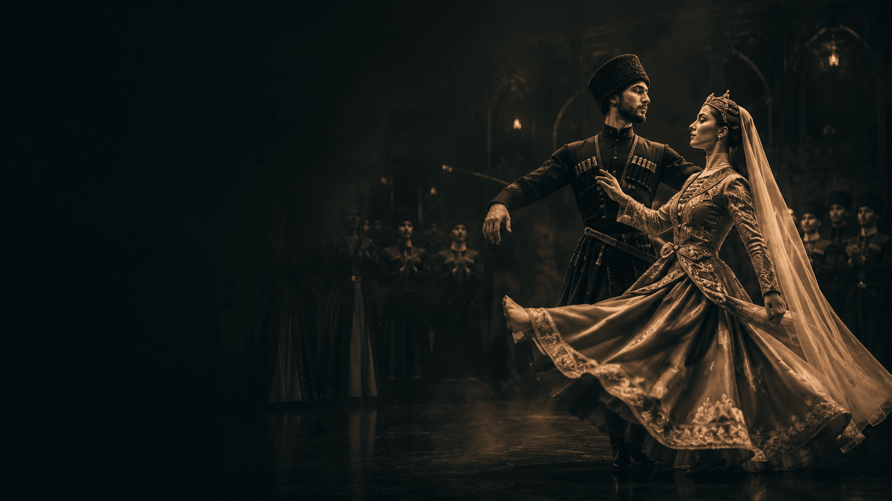
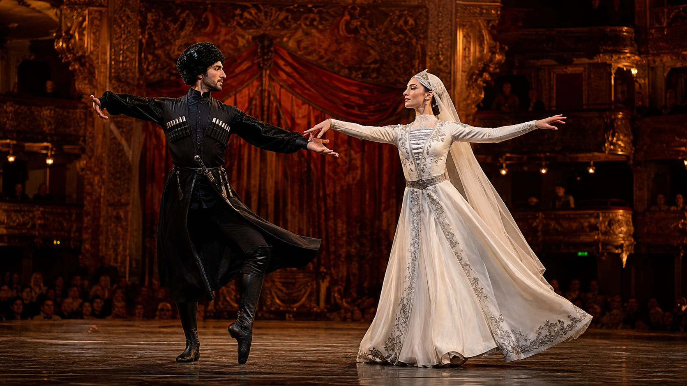

Дагестан · Махачкала
Вечер национальной музыки и танца
Крупное событие недели с привязкой к региону, площадке, коллективам и медиаархиву.


Музыкально-просветительский портал
Музыка, которая объединяет Кавказ
События, коллективы, музыканты, учреждения культуры, традиции и культурная память республик Северного Кавказа в одном пространстве.
«Я молча люблю…»
Расул ГамзатовО проекте
Название портала связано с образом журавлей в поэзии Расула Гамзатова — символом памяти, мира, чистоты и духовной высоты. Проект создаётся как единое информационное пространство о музыкальной и сценической культуре Кавказа.
Здесь собираются события, коллективы, музыканты, учреждения культуры, фотогалереи, статьи, архивные материалы и справочная информация по республикам.
События
Не просто события, а живая культурная лента: концерты, фестивали, конкурсы, гастроли, памятные вечера, мастер-классы и региональные программы.
Дагестан · Махачкала
Крупное событие недели с привязкой к региону, площадке, коллективам и медиаархиву.
Кабардино-Балкария · Нальчик
Северная Осетия — Алания · Владикавказ

Персона недели
Каждую неделю портал рассказывает о дирижёрах, исполнителях, педагогах, руководителях и молодых музыкантах, которые формируют культурную среду региона.
Читать материал
Знакомство с коллективом
Редакционный формат для знакомства с учреждениями культуры: история, руководитель, репертуар, события, видео и ссылка на подробную страницу в каталоге.
Открыть каталог
Тёмная сцена
События, учреждения культуры, коллективы, музыкальные традиции и медиаархив региона.
Открыть раздел
Серебристый блок
Песенная культура, сцена, современные исполнители, ансамбли и региональные события.
Открыть раздел
Белый блок
Башни, песенная память, хореография, молодёжные коллективы и культурные площадки.
Открыть раздел
Серебристый блок
Академическая сцена, национальная школа, хоровая традиция, театр и симфоническая культура.
Открыть раздел
Белый блок
Танец, песня, оркестры, филармоническая инфраструктура и горная сценическая эстетика.
Открыть раздел
Тёмная сцена
Многонациональная музыкальная среда, народные инструменты, ансамбли и фестивали.
Открыть раздел
Серебристый блок
Адыгская музыкальная традиция, танец, костюм, ансамбли и образовательные проекты.
Открыть раздел
Белый блок
Филармонии, фестивали, гастрольная лента и культурные связи регионов Кавказа.
Открыть разделФотогалерея
Визуальный раздел после атласа: крупные фотографии без мелких квадратов и без перегруза.



Культурная инфраструктура
Ключевые концертные организации республик и регионов Кавказа.
Открыть разделАкадемическая сцена
Академические коллективы, концертные залы, дирижёры и репертуар.
Открыть разделНародные инструменты
Домры, балалайки, гармони, баяны и народная инструментальная школа.
Открыть разделТрадиция и сцена
Песня, танец, костюм, сценическая пластика и традиции республик.
Открыть раздел
Танец Кавказа
Хореографические школы, ансамбли и сценические программы.
Открыть разделЛюди культуры
Дирижёры, солисты, педагоги, композиторы и молодые исполнители.
Открыть разделПартнёрский слой
Бесплатный просветительский портал: события, регионы, коллективы, традиции, фотогалереи и материалы.
Музыкальное агентство: артисты, певцы, концертные предложения, портфолио, промо и сопровождение проектов.
Сайты для оркестров, филармоний, ансамблей, солистов, педагогов и фестивалей. Этот блок не мешает порталу, а работает как аккуратная реклама услуг.